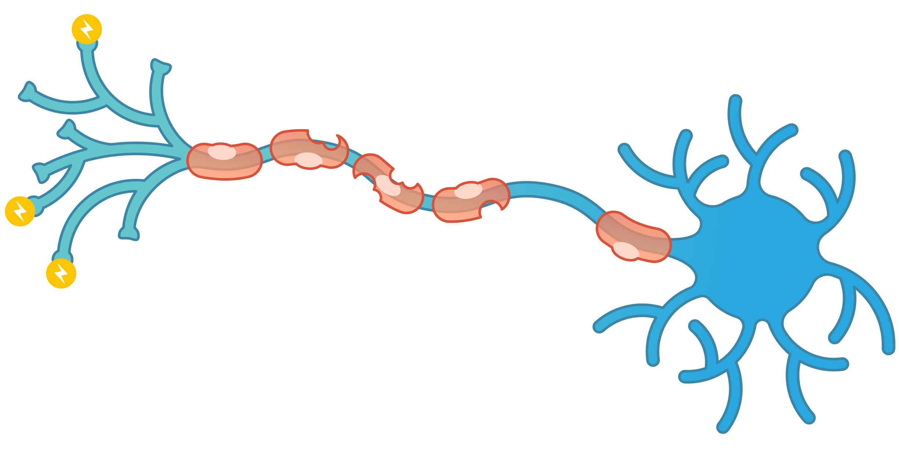

ABOUT US
OUR TREATMENTS
RESEARCH
CLINICAL TRIALS
CLINICAL TRIALS
WHAT ARE CLINICAL TRIALS?
Clinical trials are a type of research that studies new tests and treatments and evaluates their effects on human health outcomes. They are the primary way that researchers find out if a new treatment, like a new drug or diet or medical device is safe and effective in people.
WHAT ARE THE FOUR PHASES OF CLINICAL TRIAL?
+A Phase I trial tests an experimental treatment on a small group of often healthy people (20 to 80) to judge its safety and side effects and to find the correct drug dosage.
+A Phase II trial uses more people (100 to 300). While the emphasis in Phase I is on safety, the emphasis in Phase II is on effectiveness.
+A Phase III trial gathers more information about safety and effectiveness, studying different populations and different dosages, using the drug in combination with other drugs. The number of subjects usually ranges from several hundred to about 3,000 people.
+A Phase IV trial for drugs or devices takes place after the FDA approves their use. A device or drug's effectiveness and safety are monitored in large, diverse populations.
MULTIPLE SCLEROSIS CLINICAL TRIALS
Currently, 29 studies are conducted at Mayo Clinic at the moment.
+A Study of the Effectiveness of ADS-5102 in Patients with MS and a Walking Impairment
+A Study of the Effectiveness and Safety of Ofatumumab Compared to Teriflunomide for MS
+MRI Markers in MS
Finding a Clinical Trial
Research through clinical trials is ongoing for MS. Talking with your doctor is a good way to learn more about research opportunities in your area.
Email
Instagram
© Monterosa Lee 2021